AI 文章核心概述（精简版）
本文通过对2026年9月底A股行情的深度追踪，揭示了当前市场在存量博弈和增量抽血（高额新股与解禁潮）夹击下的脆弱生态。作者的核心逻辑在于：当市场整体处于流动性匮乏的弱势周期时，大股东解禁与密集新股发行无异于对市场‘抽血’，进一步恶化了多空力量对比。同时，通过主力资金持续净流出的宏观数据，映射出机构和散户在信心不足时的防御心态。文章主张通过网格交易和严格的红绿区评分系统来对抗市场波动，在不确定性中寻找结构性机会。
股养不炒：笑看千层浪，静候万点红
历史全职收益率
上周
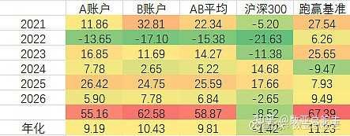
本周
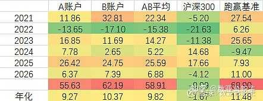
上周
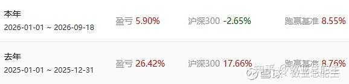
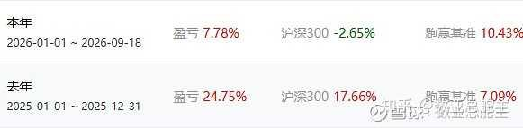
本周
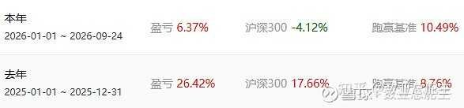
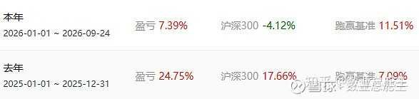
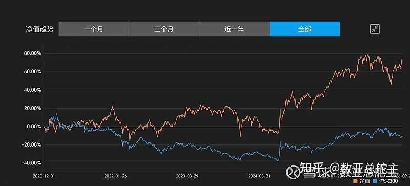
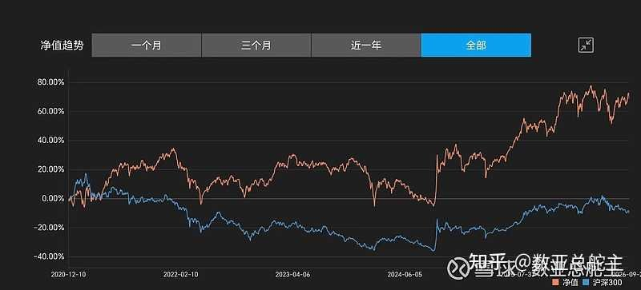
本周仓位95%，本周市值+0.04%，去年+25.59%，今年+6.88%；相比沪深300约+11%左右.持仓收益率和沪深300收益率差值本周相比上周+1.51%。本周会所超募注【本质逻辑】指上市公司在发行股票时，实际募集到的资金远超项目实际所需资金。在市场低迷、存量资金抱团时，超募抽离了本就稀缺的二级市场活水，加剧了供需失衡。【新手提示】面对超募严重的新股或次新股，切忌盲目跟风炒作，谨防上市即巅峰的割韭菜陷阱。又继续,贺中秋贺出访。
东财全A周线级别数亚K线
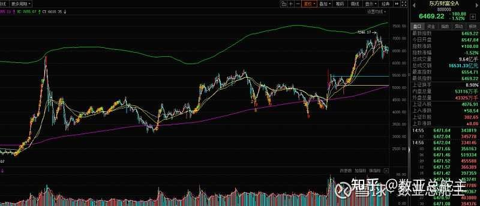
图表视觉解读
- 东方财富全A周线图显示，指数在经历前期反弹后触及上方压力位，多头动能明显衰竭，多空力量正在向空方倾斜。
- 成交量呈现萎缩状态，说明场外增量资金观望情绪浓厚，场内资金多以存量博弈为主，缺乏发动大行情的合力。
- 新手视觉暗示：面对这种上行受阻、缩量调整的走势，切忌盲目激进满仓，应控制总仓位，耐心等待右侧趋势明朗。
$英伟达(NVDA)$
日线
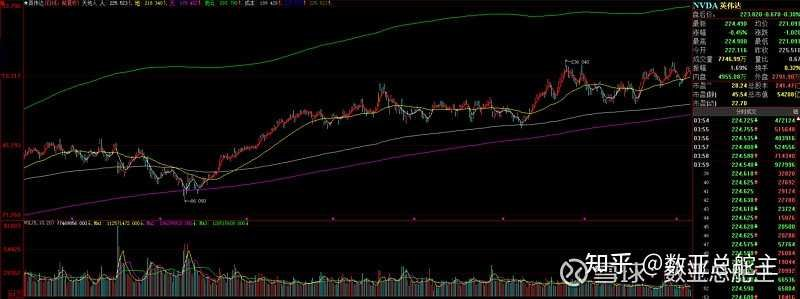
周线
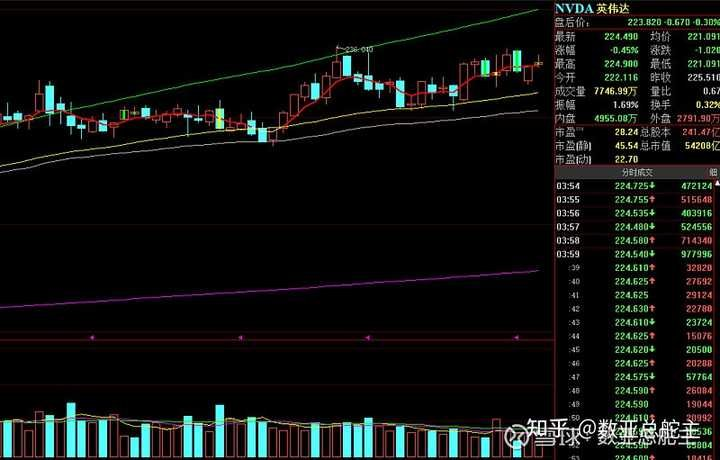
东升西落，西落只要观察这个标的就可以了。
未来3月解禁市值注【本质逻辑】指此前不能在二级市场交易的限售股解禁获得了流通权。解禁规模大意味着潜在抛压集中增加，若市场承接资金不足，极易引发持股者抢跑踩踏。【新手提示】务必在交易软件中提前查询持仓股的解禁时间表，避开解禁高峰期，防止遭遇突发性供给冲击。:（增加100亿左右)
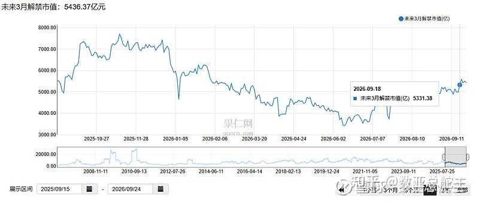
数据来源：果仁网
本周新股（5天3+2个）
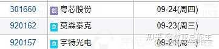
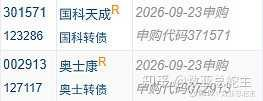
下周计划新股债（5天2+4个）
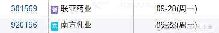
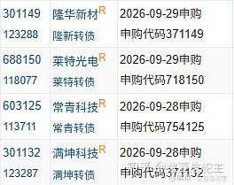
下下周计划新股债（5天1个）
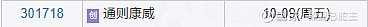
本周3+2个。下周目前能见2+4个，下下周目前能见1个。本周总量在上周翻倍基础上又增加50%，本周总量85亿左右，比正常体量3倍。会所不知道怎么想的，高位指导平准退出?连跌几周，低位超募？严重缺血的情况下，冷漠的继续抽血。
对于新股发行，我们散户需要提高到很高的警戒层面，一个是看发行数量一个是看发行体量。在高数量或者高体量的新股发行之前回避洪水，等洪水退去水流平缓之后再进去游泳。
新股新转债募资图
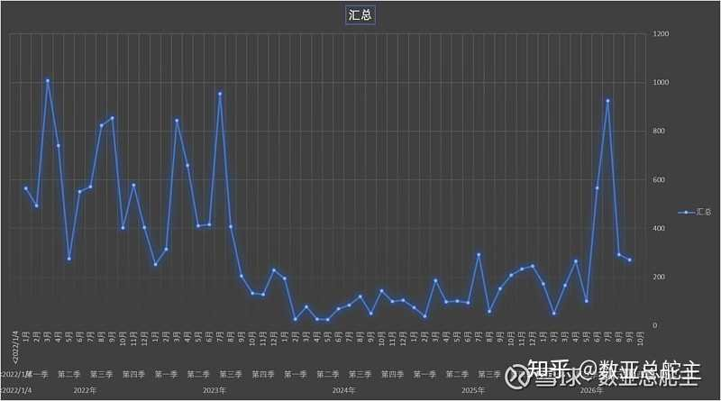
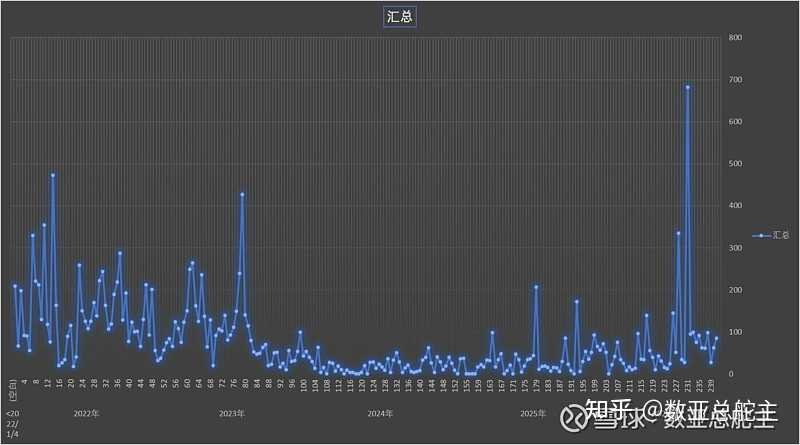
9月募资额和8月差不多水平。募资确实需要更健康的逻辑，比如市场不好，就不抽血；指数上涨一定比率，给出一定募资配额等。
指数数亚强度：
周变化
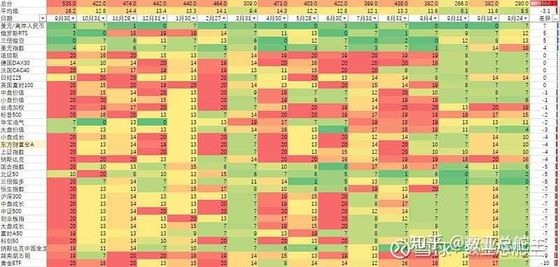
百年未有之大变局。
舵主的判断是欧美和A港股都要开始拐头了。但是这个拐头，是以很多人财富激变为代价的，这个过程正在发生中。不过不得不佩服美团的预期管理，总能维持在高位似崩不崩。
这个表可以多关注，这个表可以从长周期角度观察哪个市场哪个产品现在的冷热和多空程度，帮助自己判断资产配置的方向。
主力动向
前面几年主力一直在流出，没有一个月是正流入的。上图是22年后每周和每月的北向和主力汇总。这张周主力流出图就是A股全体散户的血泪史，自从村里喊话大家挺起嵴梁骨，他们用流出图画出了一个不断下跪磕头的嵴梁。
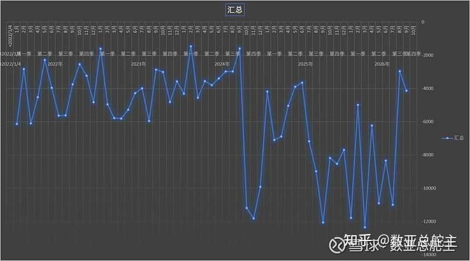
图表视觉解读
- 主力资金长期且大幅度的净流出曲线，直观展现了机构资金在 A 股市场上的持续防御与撤离态势。
- 曲线的每一次阶段性反弹未能改变整体向下的大趋势，折射出市场缺乏长线大资金的坚定托底。
- 新手视觉暗示：跟随主力大方向做逆势抄底风险极高，应当把资金安全放在首位，严格执行纪律，避免成为机构出逃时的接盘侠。
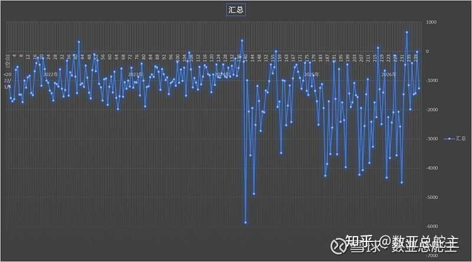
主力本周净流出大幅度增加，回升到上上周水平。
吐血建议上层加强公募机构恶意净流出监管，对违反稳定器操守的机构处以高额罚款.
热点及鱼仓股票强度周变化
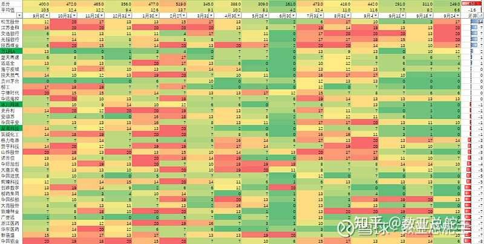
20分的可以手动网格卖出，买入0分的。切记一定是卖切糕一样网格操作！！！只要坚持买0卖20，大概率不会亏钱。
美股七姐妹强度周变化
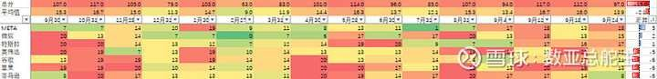
美股的情况，有空的化周末会单独写文章，平台一天只能一篇文章通知，所以需要自己点进公众号去看。
渡劫观察股强度周变化
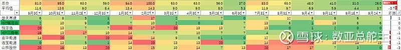
股票名字标绿色的，目前扣非收益是亏损的，尽量回避。
鱼仓股票本周涨跌
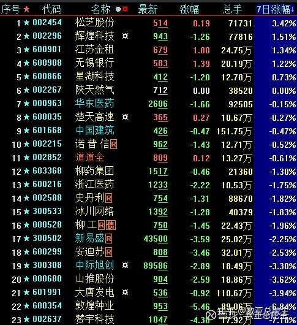
鱼仓股票25年五一选出至今涨跌
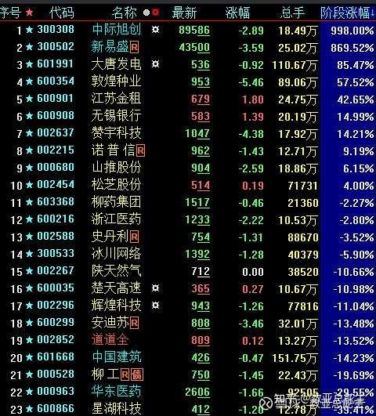
组合走势
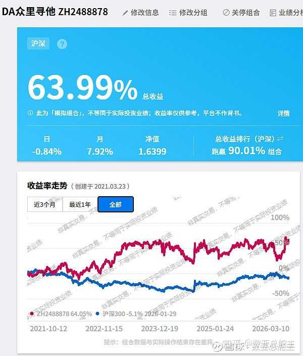
目前众里寻他组合收益最高，这周+1.36%，五年多+63.99%。各个组合的持仓可以进我主页点进去看，也可以关注组合，这样会收到调仓的提醒。因为只是虚拟组合，所以我也不是非常用心，第一这个不能像自己账户一样设置网络羊毛，第二优先想到止盈止损的肯定是自己的实盘，虚拟盘哪个里面到底有哪个股票，我也是要点进去才能想起来。
数亚文章阅读应知应会：
指数和股票红绿区图：独家评测体系，适用已上市三年以上所有指数和股票。0分为短中长线处于完全空头走势，20分为短中长处于完全多头走势。0分反转概率增大但仍然可能出现长期下跌长期0分，20分反转概率增大但仍然可能出现长期上涨长期20分。13分左右是多空纠缠区域。13分以下比较弱势，13分以下开始强势。
买入卖出：需要结合自身的交易体系，有的人喜欢左侧，有的人喜欢右侧。没有绝对胜率的系统，每种交易系统各自为自己的风险买单
低估值股票：PB低，扣非ROE高（全A靠前），成长性好（同比环比高），自身历史分位较低
趋势：大仓位买进前看一下月线走势，看看是不是高位买入，位置是不是像日线那样让自己感觉想买入。
网格：能用网格交易注【本质逻辑】将资金和仓位分成多份，设定价格区间进行机械式的‘跌到格就买、涨到格就卖’。其内在机制是利用震荡市的波动赚取差价，强行克制人性追涨杀跌的弱点。【新手提示】网格交易的前提是标的不能长期单边下跌并归零，因此必须挑选基本面稳健、具备长期生存能力的宽基指数或优质龙头股。尽量网格交易，标的越多越好。一来可以对冲择股出现的风险，一来可以通过成交不断慢慢拉低成本。
均线：多看案例，自己去设置符合自己习惯的K线参数。均线只是参考，基于自己偏好的参数给出统计值。绝对胜率的线是不存在的，只能说大概率会帮助你做判断。
守正出奇：守正部分的内容我认为应该是正道，价值投资为主。出奇部分的赌性就很大了，在妖股军团很活跃的时候，挑选体质好的妖股在合适的位置可以小仓位参与赌一下，风险自负
$新华文轩(SH601811)$ $千金药业(SH600479)$
#今日看盘# #今日话题##福建本地股异动，海峡创新涨停#
全文总结与新手避坑指南
全文总结：当前A股市场正处于多空胶着的脆弱脆弱期，宏观流动性与微观筹码供应（解禁与新股）之间的矛盾较为突出，机构资金整体流出折射出市场信心的修复尚需时日。新手防踩雷法则：1. 严控仓位，切忌在缺乏增量资金的弱势震荡中盲目梭哈；2. 密切关注解禁日程和新股抽血效应，主动规避高风险节点；3. 善用量化指标与网格交易纪律，用机械化操作克服人性弱点，在大风浪中守住本金。
财神哥，除了先导还有其他的都走得非常漂亮，比如一博金百泽什么的，反而之前的辨识度（风华太极宝鼎有研什么的）走得不太行，这种应该怎么选股以实现早期介入呢？至少鱼头吃不到到鱼身的时候冲进去。